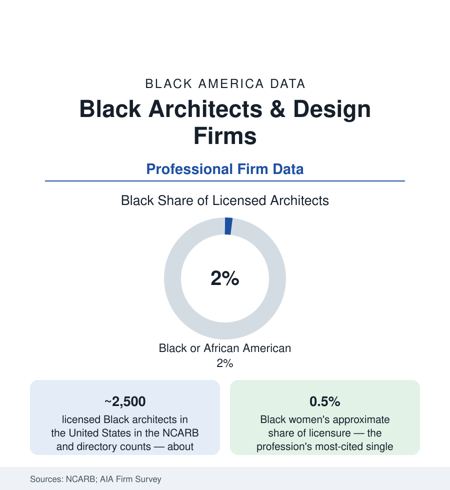

Black Business
Black Architects and Design Firms: Two Percent of the People Who Draw America
About 2% of licensed American architects are Black — some 2,500 practitioners — and the firms they lead shape far more than that share of the built record. The licensure and firm data.

Every building in the cities section was drawn by someone, and the drawing professions' data hold one of the starkest representation figures in this atlas: about two percent of America's licensed architects are Black — on the order of 2,500 people — and Black women hold roughly one-half of one percent of licenses, a figure the profession itself quotes as its conscience. Yet the built record those few thousand practitioners and their firms have produced is monumental in the literal sense: churches, campuses, memorials, airports, and the National Museum of African American History and Culture itself. This article reads the licensure pipeline and the firm landscape.
The Pipeline: Studio, Internship, Examination
The profession's funnel is long by design: the accredited degree (the architecture schools' enrollment data show Black students at roughly four to five percent of B.Arch and M.Arch cohorts — already thin, and thinning with attrition the studio-culture research documents), the multi-year licensure experience requirement (the AXP's supervised hours, whose completion data NCARB now publishes by race — the gaps measurable at each division), and the six-division Architect Registration Examination, whose pass rates by demographic group NCARB began releasing in the current era, recording disparities that moved the profession's conversation from anecdote to its own published numbers. Each stage's mesh is documented; so is the mentorship variable — licensure requires supervisors, and a profession two percent Black offers its Black candidates few supervisors who share their background, a compounding the National Organization of Minority Architects' (founded 1971, in a Detroit hotel room during the AIA convention the standard history records) entire institutional existence is built to counterweight.
The Firms: A Landscape of Landmarks and Small Shops
The firm data split between the landmark practices and the long tail. The landmarks: the firms of the record — Paul R. Williams' Los Angeles practice of the golden-age stars (the profession's first Black AIA Fellow, its first Black member, licensed in 1921 into a profession that would not let him sit with clients — his archive at USC and the Getty the field's treasure); the modern majors — firms founded and led by Black architects holding national portfolios in airports, universities, museums, and civic work (the design of the Smithsonian's African American museum led by a Black architect's firm in association — the building this atlas's readers know best). The long tail is the ABS's professional-services slice: hundreds of small Black-owned architecture and allied engineering practices, typically under ten people, whose work is the community's built fabric — the churches, charter schools, clinics, cultural centers, and housing of the cities section — procured through the public and institutional channels (the supplier-diversity and set-aside files of the construction article) and through the reputation networks of the Black institutional world. The engineering side's data run parallel: Black engineers at roughly five percent of the engineering workforce in the federal counts, their firms' census in the same professional-services slice.
The Preservation and Authorship File
The profession's memory work has become a data field of its own: the Directory of African American Architects (the Howard-anchored census that counts the licensed, living and historical), the landmark-designation campaigns recovering Black architects' buildings (Williams' restored and listed works; the endangered buildings by Black architects whose demolition the preservation press now tracks as losses of authored heritage), and the scholarship reattributing the record — buildings long credited to firms of record whose design leads were Black, a revision the archives support. The pipeline interventions follow the funnel the data draw: the pre-college studio programs (HIPHOP Architecture Camp and its peers), the NOMA student chapters, the exam-prep and mentorship cohorts whose licensure completions the organizations publish, and the HBCU architecture programs (seven accredited, Howard, Hampton, Tuskegee, and Florida A&M among them) whose graduates carry a share of the license count far above the schools' size — the HBCU file's design-school chapter.
Reading the Architecture Data
Two percent of the licenses, half of one percent for Black women — and the museum on the Mall, the churches on a thousand corners, and the campuses of the HBCUs drawn from that same small count. The data question the profession now asks itself, in its own published pass rates, is not whether the talent exists. It is how many buildings America never got because the funnel's mesh was set where it was — and whether the current cohort's numbers move the share before another generation of the built record is drawn without them.
More in Black Business
Black-Owned Businesses: Counts, Receipts, and the Representation Gap
About 161,000 Black-owned employer firms and three million solo ventures: how the Census Bureau counts Black business ownership, where firms concentrate, and the gap between population share and business share.
Black Median Net Worth: The Wealth Gap in Federal Reserve Data
The Federal Reserve puts Black median family net worth at $44,900, against $285,000 for White families — about 16 cents on the dollar. The widest gap in economic data.
Black Buying Power: The $1.8 Trillion Consumer Economy
Black buying power is estimated at about $1.8 trillion — larger than the economy of most nations. What the figure measures, who produces it, and what it buys.
Source: National Council of Architectural Registration Boards; American Institute of Architects; National Organization of Minority Architects; U.S. Census Bureau Annual Business Survey; Directory of African American Architects.